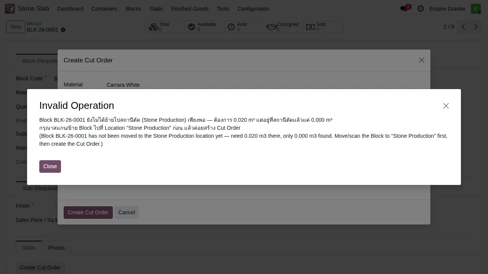
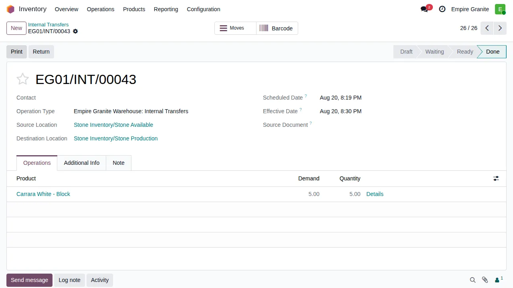

บทนี้ครอบคลุมเฉพาะขั้นตอนการผลิต (MRP) ของประเภทสินค้าที่ 3 — "ตัดตามสั่ง" (ดู concept รวมที่ บทที่ 13: 4 ประเภทสินค้า/โหมดการขาย (Product Concepts)) นี่เป็นโหมดเดียวใน 4 โหมดที่ใช้ Odoo Manufacturing (MRP) จริง — โหมดอื่นๆ ตัดแผ่นด้วย custom transformation ธรรมดา ไม่ผ่านระบบผลิต
จัดหน้านี้ใหม่ (2026-07-22) ให้แยกตามฝ่ายที่รับผิดชอบแต่ละขั้นตอนแทนลำดับ step 1-5 แบบเดิม — เพื่อให้พนักงานแต่ละฝ่ายเปิดอ่านเฉพาะส่วนของตัวเองได้เลย ลำดับงานจริงคือ ฝ่ายขาย → ฝ่ายคลัง/ผลิต → ฝ่ายส่งของ → ฝ่ายบัญชี
ภาพรวม Flow

อัปเดต 2026-07-15: หลัง "Complete Cut" เสร็จ ระบบจะ ผูกแผ่นใหม่เข้ากับ SO บรรทัดเดิมให้อัตโนมัติทันที (สถานะเปลี่ยนเป็น "Hold" + ปุ่ม "Slabs" smart button ขึ้นบน Quotation เลย) ไม่ต้องกลับไปกด Select Slabs ซ้ำอีกแล้วเหมือนเดิม — ดูหัวข้อฝ่ายคลัง/ผลิตด้านล่าง
🎬 คลิปสาธิต: Cut to Order ข้ามบริษัท (EG ตัดจากก้อน ES)
*session พนักงาน EG ปกติ (ไม่ได้ติ๊ก company ES ไว้) เปิด Quotation → เพิ่มสินค้าหิน → Cut to Order เลือกก้อน ES-B-0001 (อยู่คนละบริษัท) → Create Cut Order → Complete Cut → กลับมา Confirm SO ทั้งใบ ทั้งหมดในเทคเดียวไม่มีตัดต่อ (บันทึกหลังแก้บั๊กทั้ง 3 ตัวแล้ว)*
👤 ฝ่ายขาย — เปิด Quotation แล้วเลือกวิธีจัดหาแผ่น
เปิด Quotation ใหม่ตามปกติ เลือกลูกค้า แล้วเพิ่มสินค้าประเภทแผ่นหิน (เช่น "Emperador Grey Light Marble Slab") — เมื่อ save แล้ว บรรทัดสินค้าจะมีปุ่ม "Select Slabs" และ "Cut to Order" ให้เลือกทั้งคู่ (ถ้าไม่มีแผ่นพร้อมขายเลย ก็ยังกด Cut to Order ได้ทันที)

พนักงานขายกด Cut to Order ตรงนี้เมื่อไม่มีแผ่นสำเร็จรูปพอดีขนาดในสต็อก (ถ้ามีอยู่แล้วให้กด Select Slabs แทน ดู บทที่ 04: ขายเป็นแผ่น (ไม่แปรรูป)) — จากนี้ไปเป็นหน้าที่ฝ่ายคลัง/ผลิตรับช่วงต่อ
👷 ฝ่ายคลัง/ผลิต — สร้าง Cut Order, ตัดจริง, Complete Cut
วิธีย้าย Block ไปสถานีตัด (ฝ่ายคลังทำก่อนแจ้งฝ่ายผลิต หรือฝ่ายผลิตทำเองก็ได้):
Stone Inventory/Stone Available, Destination Location = Stone Inventory/Stone Production
ตัวอย่างจริง: กด Create Cut Order ทั้งที่ยังไม่ได้ย้าย Block ไปสถานีตัด (Block BLK-26-0001) — ระบบบล็อกด้วย error "Invalid Operation" ทันที ก่อนสร้าง MO ใดๆ

Internal Transfer ย้าย Block จาก Stone Available → Stone Production สำเร็จ (สถานะ Done, EG01/INT/00043) — หลังจากนี้กด Create Cut Order ได้ตามปกติ ไม่ติด error อีก
กดปุ่ม Cut to Order เปิด wizard "Create Cut Order" — ระบบ pre-fill ช่อง Material ให้อัตโนมัติจากสินค้าที่เลือกไว้ในบรรทัด

กรอกให้ครบ:
- Cut From Block — เลือกก้อนหิน (Block) ที่จะเบิก CBM มาตัด ระบบกรองให้เห็นเฉพาะ Block ของ Material เดียวกัน รวมก้อนของอีกบริษัทด้วย (เช่น พนักงาน EG เลือกก้อนที่อยู่คลัง ES ได้เลย — ระบบจัดการ intercompany ให้อัตโนมัติเหมือน Select Slabs ดู บทที่ 08: ขายข้ามบริษัท (EG↔ES))
- Target L (M) / Target H (M) — ขนาดแผ่นที่ต้องการเป็นเมตร ระบบคำนวณ CBM ที่ต้องเบิก = L × H × ความหนาของก้อนนั้น แล้วเช็คว่าก้อนมี CBM เหลือพอไหมก่อนให้กด Create ได้

กด Create Cut Order ระบบจะสร้าง MO (Manufacturing Order, รหัสขึ้นต้นตาม warehouse ของก้อนนั้นจริง เช่น EGWH/STCUT/ หรือ ESWH/STCUT/) ให้อัตโนมัติ พร้อมยืนยัน (Confirm) ให้เสร็จในทีเดียว — เปิดมาจะเห็นสถานะ "Confirmed" คอลัมน์ To Consume / Consumed แสดง CBM จริงที่จะเบิกจากก้อน (คำนวณจาก L×H×ความหนา) และปุ่มพิเศษของโมดูลนี้ "Complete Cut" (ข้าง Produce All / Plan / Start / Cancel ที่เป็นปุ่มมาตรฐาน MRP)

หมายเหตุ: MO นี้จะโผล่เป็น breadcrumb เชื่อมกลับไปที่ Quotation ต้นทาง — ตามหาได้ง่ายถ้าต้องเช็คย้อนหลังว่า MO ไหนมาจาก SO ไหน
พนักงานคลังกดปุ่ม Complete Cut (ไม่ใช่ปุ่ม "Produce All" มาตรฐานของ Odoo — โมดูลนี้เขียนปุ่มเฉพาะทับ เพราะต้องสร้าง Lot/Serial ให้แผ่นใหม่ก่อนแล้วค่อยเรียกกลไก mark-done มาตรฐานต่อ) ระบบจะ:
<ชื่อ Block>-<ลำดับ> (เช่น EMG-B-0003-4)stone.slab ใหม่เข้าระบบcost/cost_sqmt ของแผ่น (ซึ่งเป็นต้นทุนวัสดุเท่านั้นเสมอ ไม่ว่าจะตัดด้วยวิธีไหน) แต่ตัวเลขเดียวกันนี้จะไหลเข้า field ใหม่ slab.labor_cost/total_cost โดยอัตโนมัติด้วย (อัปเดต 2026-08-20) ดู บทที่ 07: ต้นทุนสินค้า สำหรับภาพรวมเต็มMO เปลี่ยนสถานะเป็น Done ทันที เห็น Lot/Serial Number ที่สร้างขึ้นในฟอร์ม, field ใหม่ "For Sale Order Line" ชี้กลับไปบรรทัดขายต้นทาง, และปุ่ม Unbuild โผล่ขึ้นมา (ปุ่มมาตรฐานของ Odoo MRP สำหรับย้อนกลับ MO ที่ทำเสร็จแล้ว — ใช้กรณีตัดผิดขนาดแล้วต้องแก้ไข)

กลับไปที่ Quotation ต้นทาง (คลิก breadcrumb) — จะเห็นปุ่ม "Slabs" smart button (1) ปรากฏขึ้นเองทันที ไม่ต้องกด Select Slabs ซ้ำแบบเดิมอีกแล้ว (ตรวจสอบจริงผ่าน backend: แผ่นใหม่มี status='hold', sale_order_id/sale_line_id ชี้กลับมาที่ Quotation/บรรทัดนี้ทันทีหลัง Complete Cut) — จากจุดนี้ส่งกลับให้ฝ่ายขายกด Confirm SO ต่อ

🚚 ฝ่ายส่งของ
จากจุดที่ฝ่ายขาย Confirm SO แล้ว flow ที่เหลือ (ส่งของ สแกนยืนยัน Serial, เซ็นรับ) เหมือนกับประเภท 2 (แผ่นหินสำเร็จรูป) ทุกประการ — ดูรายละเอียดที่ บทที่ 06: ส่งของและยืนยันการรับ
ถ้าเป็น Cut to Order ข้ามบริษัท (ตัดจากก้อนอีกบริษัทหนึ่ง) — Delivery Order จริงจะเปลี่ยนเป็น Drop-ship ตัดตรงจากคลังของบริษัทเจ้าของก้อนไปหาลูกค้าเลย ไม่ผ่านคลังของบริษัทที่เปิด SO — กลไกเดียวกับ Select Slabs ข้ามบริษัท ดู บทที่ 08: ขายข้ามบริษัท (EG↔ES)
💰 ฝ่ายบัญชี
- ต้นทุนวัตถุดิบ (ราคาก้อนหิน สัดส่วน CBM ที่ใช้จริง) ผูกเข้า Analytic Account ของ SO line โดยอัตโนมัติผ่านกลไกเดียวกับ Select Slabs
- ค่าแรงตัดโดยประมาณ (จาก Stone Cutting workcenter
costs_hour× เวลามาตรฐาน) บันทึกเป็นต้นทุนเพิ่มเข้า Analytic Account เดียวกัน — เห็นได้ที่ Invoicing > Reporting > Analytic Items - ถ้าข้ามบริษัท: ระบบออก draft invoice/draft vendor bill ให้อัตโนมัติทันทีที่ Confirm SO (ADR-014) — ต้องเข้าไปตรวจตัวเลข/วันที่แล้ว post เองอีกที ดูสรุปที่เมนู Stone Slab → Intercompany Reconciliation — รายละเอียดเต็มที่ บทที่ 08: ขายข้ามบริษัท (EG↔ES)
🐛 บั๊กที่พบ+แก้ระหว่าง validate ข้ามบริษัท (2026-07-22)
ทดสอบ Cut to Order ข้ามบริษัทเป็นครั้งแรก (ก่อนหน้านี้ไม่เคยทดสอบ) เจอบั๊กจริง 3 ตัวเรียงกัน ทั้งหมดเป็นกลุ่มเดียวกัน — โค้ดอ่าน/สร้าง record ของอีกบริษัทโดยไม่ sudo()/with_company() ทั้งที่ฟีเจอร์ตั้งใจให้ข้ามบริษัทได้โดยไม่ต้องพนักงานทำอะไรเพิ่ม:
warehouse = self.bundle_id.warehouse_id ไม่ได้ sudo ก่อนส่งเข้า _ensure_stone_bom() ซึ่งอ่าน warehouse.company_id ทันที_compute_remaining_cbm()/_compute_remaining_sqmt() ค้นหา stock.quant โดยไม่ sudo บั๊กนี้อันตรายกว่า 2 ตัวอื่นเพราะไม่ error ให้เห็น แค่คำนวณผิดเงียบๆ เป็น 0 เสมอaction_create_cut_order() สร้าง mrp.production ตรงๆ ไม่ผ่าน sudo/with_company และหลังแก้ข้อนี้ยังเจอต่อว่า BOM/Workcenter/Picking Type ที่ระบบ find-or-create ให้ ผูกกับบริษัทแรกที่เคยใช้ฟีเจอร์นี้เท่านั้น (_ensure_stone_bom() ค้นหาด้วย product_id อย่างเดียว ไม่กรองบริษัท) ทำให้ Odoo เองฟ้อง "no company crossover is allowed" — ต้องแก้ให้แต่ละบริษัทมี BOM ของตัวเองแก้ครบทั้ง 3 จุดแล้ว (commit 58fa4df, e8fd272, af12efb บน project/emg-o, ยังไม่ merge main) ทดสอบซ้ำผ่านหน้าเว็บจริงจนจบ flow ครบทุกขั้นตอนไม่มี error แล้ว (ดูคลิปด้านบน)
ข้อจำกัดที่ทราบ (Known Limitations)
remaining_cbm ต่อก้อนที่มีอยู่แล้วครอบคลุมกรณีนี้ถูกต้องอยู่แล้ว ไม่ใช่ gapcosts_hour × เวลามาตรฐานต่อครั้ง (time_cycle_manual บน BOM Operation, ตอนนี้ตั้งคงที่ 60 นาทีทุกครั้งไม่ว่าแผ่นเล็กหรือใหญ่) ปรับทั้งคู่ได้ผ่าน Manufacturing > Work Centers / Bills of Materials ตามปกติ แต่ยังไม่แปรผันตามขนาดจริงของงาน*อ้างอิงทางเทคนิคเต็ม: decisions.md ADR-018 (claude-knowledge vault) — Finish Attribute/Variant infra + Mode 3 (MRP Cut-to-Order), รวม addendum 2026-07-15 (auto-hold + labor cost tagging + byproduct decision) และ log.md 2026-07-22 (intercompany bug fixes)*